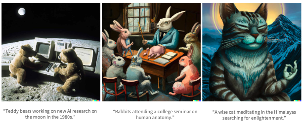
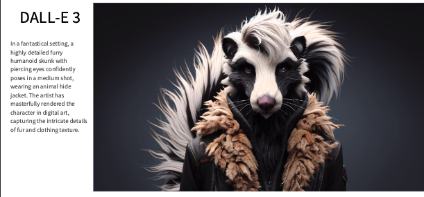
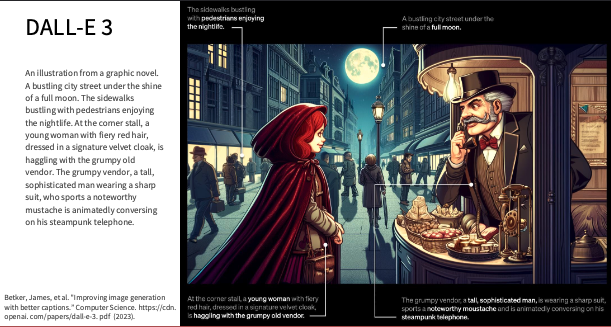

Học máy
Bài 14: Học máy trong thực tế
Trường ĐH Công nghệ – Đại học Quốc gia Hà Nội
Nội dung buổi học
- Ứng dụng ML của xử lý ảnh
- Ứng dụng AI cho text & voice
- AI trong cuộc sống hàng ngày
- Nhân vật quan trọng trong thời đại AI
- Các ông lớn AI: OpenAI & Google DeepMind
- Tương lai của AI (hype vs thực tế)
- Tóm tắt & Q&A
1.
Ứng dụng ML của xử lý ảnh
Các công cụ “thần thánh” hiện nay
- DALL·E 3 (OpenAI) – Tạo ảnh từ mô tả văn bản
- Stable Diffusion – Miễn phí, chạy được trên máy cá nhân
- Sora (OpenAI) – Tạo video từ text (đang thử nghiệm)
- Segment Anything Model (SAM) – Meta: phân đoạn bất kỳ vật gì trong ảnh
- GPT-4o – Hiểu cả ảnh + text (multimodal)
Dall-E-2

Dall-E-3

Dall-E-3

Sora
SAM
.png)
Ưu điểm của AI tạo ảnh hiện đại
- Tốc độ cực nhanh (vài giây)
- Giúp designer, marketer, sinh viên tiết kiệm thời gian
- Khơi nguồn sáng tạo (ý tưởng mới lạ)
- Dễ tùy chỉnh (thay đổi phong cách, màu sắc…)
Nhược điểm & rủi ro
- Copyright & bản quyền (ảnh AI lấy ý tưởng từ hàng triệu ảnh thật)
- Bias: đôi khi tạo ra khuôn mặt, nghề nghiệp theo định kiến
- Deepfake & hình giả lan truyền
- Tốn điện & môi trường (huấn luyện model rất “ngốn” điện)
- Hallucination: tạo ra chi tiết sai sự thật
4.
Ứng dụng AI cho text & voice
Các công nghệ phổ biến
- Text-to-Speech & Speech Recognition (Google, Whisper)
- Information Retrieval (tìm kiếm thông minh)
- Alexa, Siri, Google Assistant
- BERT, GPT series, Claude, Gemini, Grok
Classic Transformer

BERT framework

5.
AI trong cuộc sống hàng ngày
Ví dụ thực tế
- Code: Claude, Cursor, GitHub Copilot, Devin
- Xe tự lái: Tesla Full Self-Driving (FSD)
- Robot: Boston Dynamics, Figure AI, robot hút bụi, robot phẫu thuật
2.
Nhân vật quan trọng trong thời AI
Geoffrey Hinton
- Nobel Physics 2024
- Cảnh báo rủi ro AI năm 2023 và rời Google

Sam Altman

Demis Hassabis & John Jumper – DeepMind
Cha đẻ AlphaFold, giải Nobel Chemistry 2024 nhờ dự đoán cấu trúc protein

Yann LeCun
Chief AI Scientist của Meta - Người tiên phong mạng nơ-ron tích chập

3.
Các ông lớn AI:
OpenAI & Google DeepMind
OpenAI – Lịch sử ngắn gọn
- Thành lập năm 2015 bởi: Sam Altman, Elon Musk, Ilya Sutskever, Greg Brockman…
- Ban đầu là tổ chức phi lợi nhuận với sứ mệnh “kiểm soát AI vì lợi ích nhân loại”
- Thực tế: Nhiều người sáng lập muốn AI phải được kiểm soát chặt chẽ bởi một nhóm nhỏ (không để ai cũng phát triển tự do)
OpenAI – Những xung đột lớn
- Elon Musk bất đồng quan điểm → rời công ty năm 2018
- 2023–2024: OpenAI chuyển sang mô hình có lợi nhuận (for-profit)
- Xung đột giữa Sam Altman và Hội đồng quản trị → Sam bị sa thải rồi quay lại
- Hiện tại: OpenAI trở thành công ty thương mại mạnh nhất, hợp tác chặt chẽ với Microsoft
Google DeepMind
- Thành lập 2010 tại London, mua lại bởi Google năm 2014
- Là trung tâm nghiên cứu AI hàng đầu thế giới của Google
- Nhiều thành tựu nghiên cứu nổi bật:
- AlphaGo (2016) – Đánh bại nhà vô địch cờ vây
- AlphaFold (2021–2024) – Dự đoán cấu trúc protein → Nobel Chemistry 2024
- Nhiều công trình tiên phong về Reinforcement Learning
Google DeepMind & “Attention is All You Need”
- Paper “Attention is All You Need” (2017) – Định nghĩa kiến trúc Transformer
- Đây là nền tảng cho hầu hết mô hình AI lớn ngày nay (GPT, BERT, Gemini…)
- Giải Nobel Chemistry 2024 trao cho Demis Hassabis & John Jumper nhờ AlphaFold
6.
Tương lai của AI
AGI & Hype
- AGI (Artificial General Intelligence) đang được quảng cáo rầm rộ
- Nhiều CEO AI nói AI sẽ thay thế hầu hết công việc, giải quyết mọi vấn đề nhân loại
Hype rất mạnh → nhưng thực tế thì sao?
Thực tế không phải thế
- Hiện tại AI vẫn chỉ là “narrow AI” (chuyên sâu một việc)
- Vẫn hay sai, vẫn cần con người kiểm soát
- Hype ≠ thực tế
Các lỗ hổng của AI hiện đại
- Claude leak code (rò rỉ mã nguồn)
- App Rabbit R1 – source code bị rò hoàn toàn
- Builder.ai bị lộ toàn người Ấn Độ hỗ trợ chứ không phải AI
- Claude AI ăn cắp và dọa người dùng về dữ liệu
- Fake news, deepfake, propaganda (tạo tin giả lan truyền cực nhanh)
Rất khó kiểm soát quá trình phát triển AI
- Công nghệ tiến quá nhanh
- Không có luật toàn cầu thống nhất
- Lợi nhuận của các công ty lớn thường lớn hơn rủi ro an toàn
Hướng đi tương lai thực tế
- AI ứng dụng đa ngành (y tế, giáo dục, nông nghiệp, tài chính…)
- Cơ học lượng tử + AI (tăng tốc tính toán khổng lồ)
- Robotics (robot thông minh làm việc cùng con người)
Tóm tắt 3 takeaway
- AI đang ở khắp nơi và thay đổi công việc của chúng ta mỗi ngày
- AI là công cụ cực mạnh, nhưng cũng đầy rủi ro (deepfake, rò rỉ dữ liệu, mất việc…)
- Tương lai thuộc về những người biết dùng AI + hiểu rõ giới hạn của nó
Câu hỏi mở cho các bạn: Bạn nghĩ AI sẽ thay đổi ngành nghề của mình như thế nào trong 5 năm tới?